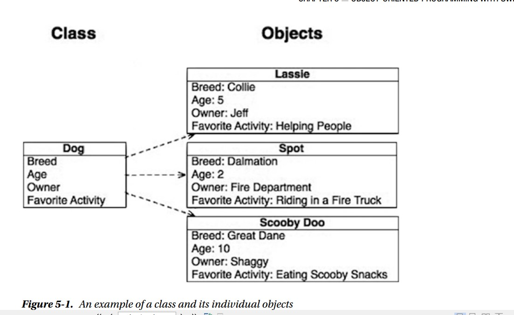

En este ejemplo, un objeto de TV tendría propiedades de tipo, tamaño y marca, mientras que un objeto Couch tendría propiedades como color, material y nivel de confort. En términos de programación, una propiedad es una variable eso es parte de un objeto. Por ejemplo, un televisor usaría una variable de cadena para almacenar la marca y un número entero para almacenar la altura Los objetos también tienen comandos que el programador puede usar para controlarlos. Los comandos se llaman métodos Los métodos son la forma en que otros objetos interactúan con un determinado objeto. Por ejemplo, con el televisión, un método sería cualquiera de los botones del control remoto. Cada uno de esos botones representa una manera de interactuar con tu televisor. Los métodos pueden y a menudo se usan para cambiar los valores de propiedades, pero los métodos no almacenan ningún valor por sí mismos. Como se describe en el Capítulo 1, los objetos tienen un estado, que es básicamente una instantánea de un objeto en cualquier momento punto en el tiempo. Un estado serían los valores de todas las propiedades en un momento específico. En capítulos anteriores, viste el ejemplo de la librería. Una librería contiene muchos diferentes objetos. Contiene objetos de libros que tienen propiedades como título, autor, recuento de páginas y editor. También contiene revistas con propiedades como título, número, género y editor. Una librería también tiene algunos objetos no tangibles, como una venta. Un objeto de venta contendría información sobre los libros. comprado, el cliente, la cantidad pagada y el tipo de pago. Un objeto de venta también puede tener algunos métodos que calculan impuestos, imprimen el recibo o anulan la venta. Un objeto de venta no representa un elemento tangible. objeto, pero sigue siendo un objeto y es necesario para crear una librería efectiva. Debido a que el objeto es la base de OOP, es importante comprender los objetos y cómo interactuar con ellos. ellos. Pasará el resto del capítulo aprendiendo sobre objetos y algunas de sus características.
No podemos discutir OOP sin discutir qué es una clase. Una clase define qué propiedades y métodos. Un objeto tendrá. Una clase es básicamente un cortador de galletas que se puede usar para crear objetos que tienen características Todos los objetos de una determinada clase tendrán las mismas propiedades y los mismos métodos. Los valores de esas propiedades cambiará de un objeto a otro. Una clase es similar a una especie en el mundo animal. Una especie no es un animal individual, pero lo hace describe muchas características similares del animal. Para entender más las clases, veamos un ejemplo de clases en la naturaleza. La clase Perro tiene muchas propiedades que todos los perros tienen en común. Por ejemplo, un perro puede tener un nombre, una edad, un propietario y una actividad favorita. Un objeto que es de cierta clase se llama instancia de esa clase Si observa la Figura 5-1, puede ver la diferencia entre la clase y los objetos reales que son instancias de la clase Por ejemplo, Lassie es una instancia de la clase Perro. En la figura 5-1, puedes ver un perro clase que tiene cuatro propiedades (raza, edad, propietario y actividad favorita). En la vida real, un perro tendrá muchos más propiedades, pero estas cuatro son para esta demostración. 